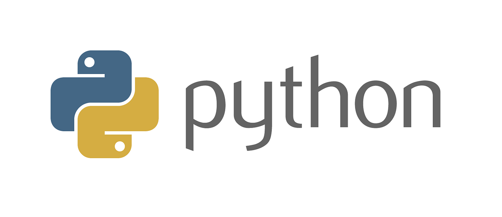

Introdução ao Python
Introdução ao Python¶

O que é Python?¶
De acordo com o proprio site do Pyhton a definição é de que:
Python é uma linguagem de programação interpretada, interativa e orientada a objetos. Ele incorpora módulos, exceções, tipagem dinâmica, tipos de dados dinâmicos de alto nível e classes. Ele oferece suporte a vários paradigmas de programação além da programação orientada a objetos, como programação procedural e funcional. Python combina um poder notável com uma sintaxe muito clara. Possui interfaces para muitas chamadas de sistema e bibliotecas, bem como para vários sistemas de janelas, e é extensível em C ou C++. Também pode ser usado como uma linguagem de extensão para aplicativos que precisam de uma interface programável. Por fim, o Python é portátil: ele roda em muitas variantes do Unix, incluindo Linux e macOS, e no Windows.
Por que o Python é tão popular?¶
Python é considerada como uma das linguagens de programação mais populares do mundo. Vamos examinar algumas das razões para sua popularidade:
- Python é versátil: Sendo uma linguagem de propósito geral, Python pode ser usado para criar e fazer muitas coisas diferentes, desde visualizações de dados, modelos aprendizado de maquina até desenvolvimento web.
- Python é simples e fácil de aprender: Sua sintaxe é simples, os comandos são baseados em inglês, e seu layout é direto.
- Python é open-source: Isso significa que é gratuito para todos usarem. Além disso, qualquer pessoa pode criar ferramentas adicionais, bibliotecas e frameworks para Python.
Python é amplamente utilizado¶
Empresas como Google, NASA, Spotify e JP Morgan Chase usam Python diariamente. Conheça um pouco mais.
- Instagram (utiliza Django como backend, um framework Pyrhon para a web)
- Google (grande parte do algoritmo de busca é escrito em Python)
- Spotify (o aplicativo é construído em Python)
- Netflix (utiliza muitas bibliotecas Python)
- Uber (boa parte do aplicativo é feita com Python)
- Dropobox (contratou o criador da linguagem Python, Guido van Rossum)
- Pinterest (utiliza Python e Django)
- Reddit (utiliza bibliotecas Python)
Um pouquinho da história...¶
Python foi concebido no final dos anos 1980 e foi inicialmente projetado para ser um sucessor da linguagem de programação ABC.

Guido van Rossum é o criador do Python. Ele começou a trabalhar na linguagem durante suas férias de Natal em 1989. Van Rossum nomeou sua linguagem de Python porque era fã do grupo de comédia britânico, Monty Python.
Python passou por muitas mudanças ao longo de sua vida. Desde sua primeira versão em 1991 até as versões mais recentes, a linguagem tem se adaptado às necessidades dos desenvolvedores e às tecnologias em evolução.